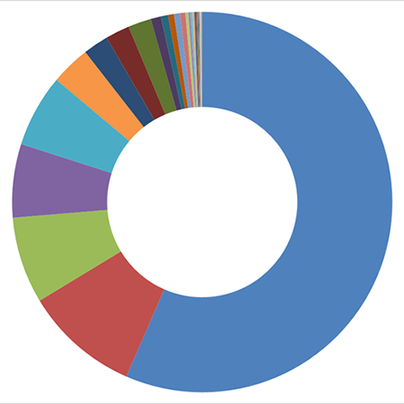

Espécies de plantas visitadas por Scaptotrigona depilis (Moure, 1942)

Basiloxylon brasiliensis (Allemão) K. Schum. Recurso: pólen e néctar
Poincianella pluviosa (DC.) L.P.Queiroz. Recurso: néctar
Cassia grandis L. f. Recurso: pólen
Mimosa sp.1
Mimosa sp.2
Ricinus communis L. Recurso: pólen e néctar
Eucalyptus moluccana Roxb. Recurso: pólen e néctar
Centrolobium tomentosum Recurso: néctar
Byrsonima intermedia Recurso: óleo + pólen
Serjania lethalis A. St.-Hil. Recurso: néctar
Outras
Caesalpinia pulcherrima (L.) Sw. Recurso: néctar